Инструментите на фотографа – подбрани модели фотоапарати, обективи, карти памет и разнообразие от аксесоари.
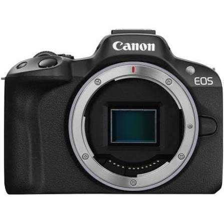
Компактен и лек безгледален фотоапарат, идеален за ентусиасти и творци в движение.
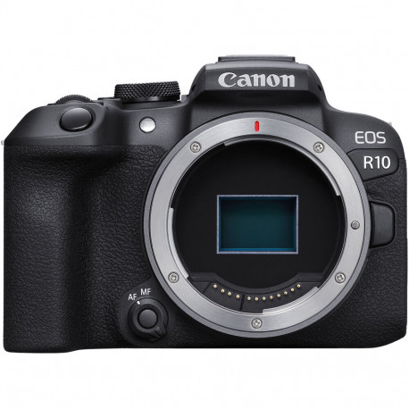
Мощен модел с усъвършенствана система за автофокус с изкуствен интелект и бързо заснемане.
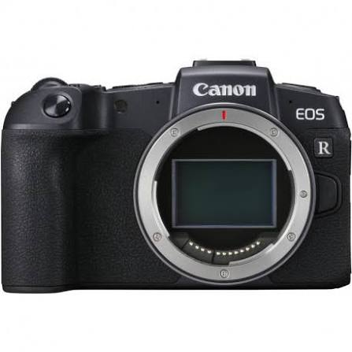
Полнокадров (Full-Frame) безгледален фотоапарат с изключително качество на изображението и детайл.
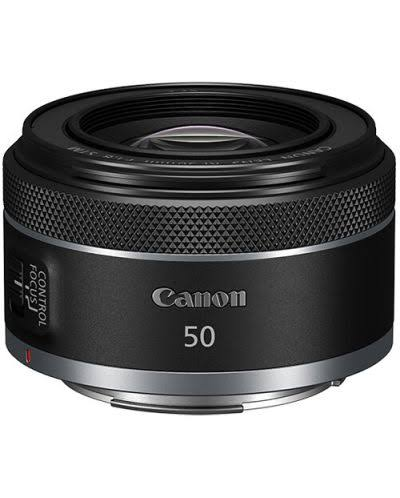
Компактен обектив с фиксирано фокусно разстояние и висока светлосила за красив боке ефект.
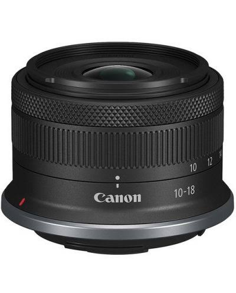
Ултраширокоъгълен вариообектив, перфектен за пейзажна и архитектурна фотография.
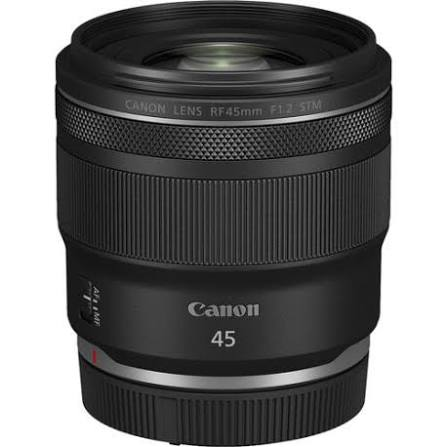
Обективи с изключителна светлосила и перфектен баланс между тегло и творчески възможности.
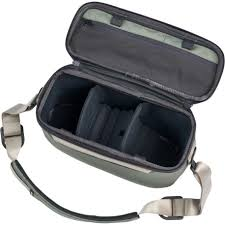
Стилна и удобна чанта (Sling) за сигурно пренасяне на фотографска техника в градски условия.
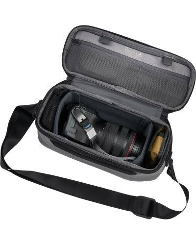
Компактен вариант на чантата за по-леки разходки и бърз достъп до оборудването ви.
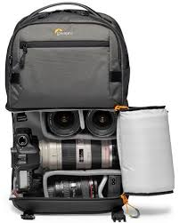
Професионална раница с отделение за лаптоп и лесен достъп до камерата на терен.
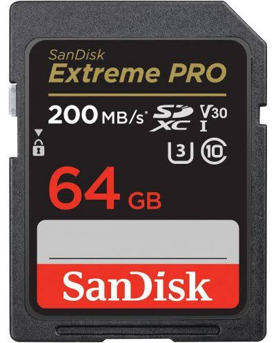
Високоскоростна карта памет, подходяща за ежедневни снимки и Full HD видеозапис.
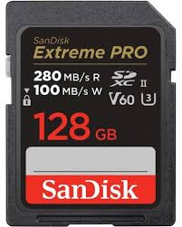
Повече пространство и висока скорост на записа, идеална за непрекъснати RAW серии и 4K видео.
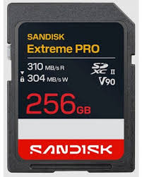
Професионална карта с максимална скорост на трансфер за най-взыскателните фото и видео задачи.
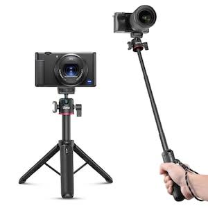
Компактна опора за позициониране на светкавици или малки камери на труднодостъпни места.
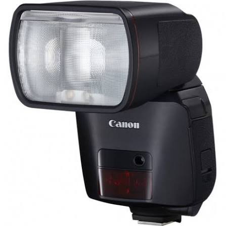
Осигурява мощен и насочен източник на светлина при нощни или студийни портретни сесии.
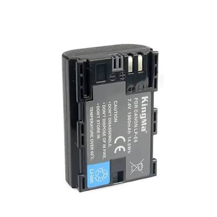
Задължителен елемент в раницата за дълги фотосесии при ниски температури.
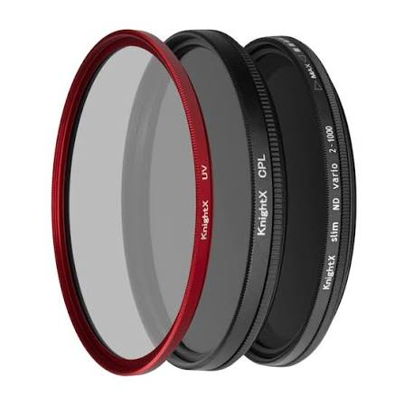
Поляризиращи филтри срещу отблясъци във вода и стъкла, плюс ND филтри за дълга експозиция.
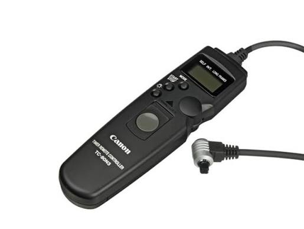
Предотвратява трептенето на камерата при натискане на бутона при пейзажи и астрофотография.
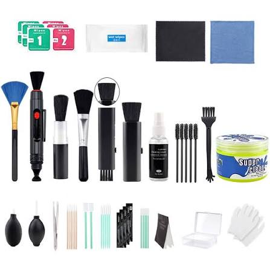
Микрофибърни кърпи, помпички и специални химикали за поддържане на оптиката идеално чиста.
Съпоставка на основните технически характеристики на представените фотоапарати (Тела):
| Характеристика | Canon EOS R50 | Canon EOS R10 | Canon EOS RP |
|---|---|---|---|
| Тип сензор | APS-C (24.2 MP) | APS-C (24.2 MP) | Full-Frame (26.2 MP) |
| Процесор | DIGIC X | DIGIC X | DIGIC 8 |
| Скорост на снимане | До 15 кадъра/сек | До 23 кадъра/сек | До 5 кадъра/сек |
| Видео резолюция | 4K 30p (през 6K) | 4K 60p (кроп) | 4K 25p |
| Тегло (с батерия) | ≈ 375 г | ≈ 429 г | ≈ 485 г |
| Целева аудитория | Начинаещи и Влогъри | Ентусиасти и Динамика | Портрет и Пейзаж |
Технически характеристики и възможности на представените обективи:
| Характеристика | Canon RF 50mm f/1.8 STM | Canon RF-S 10-18mm f/4.5-6.3 | Canon RF 45mm f/1.2 STM |
|---|---|---|---|
| Тип обектив | Твърд, светлосилен, стандартен | Лек и компактен широкоъгълен вариообектив | Твърд, светлосилен, стандартен |
| Фокусно разстояние | 50 мм (35mm екв: 50mm) | 10-18 мм (35mm екв: 16-29mm) | 45 мм (35mm екв: 45mm) |
| Максимална бленда | f/1.8 | f/4.5 - 6.3 | f/1.2 |
| Макро увеличение | 0.25x | 0.23x | 1:7.7 |
| Разрез за филтри | 43 мм | 49 мм | 67 мм |
| Размери (диаметър х дължина) | 69 x 40 мм | 69 x 44.9 мм | 78 x 75 мм |
| Тегло | ≈ 160 г | ≈ 150 г | ≈ 346 г |